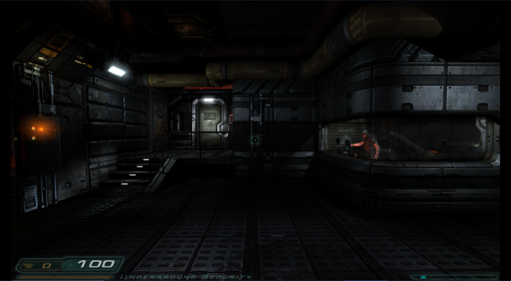
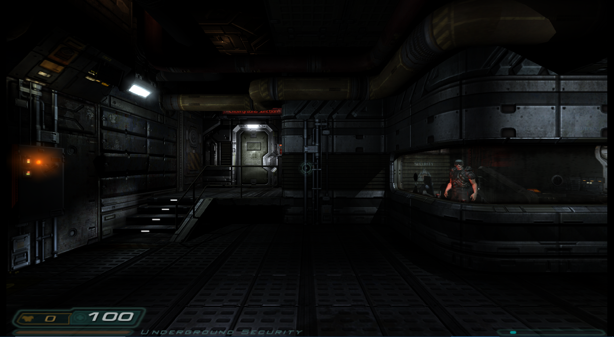

Doom 3 (Boom3)¶
Background¶
Boom 31 is a Doom 3 and Doom 3: Resurrection Of Evil GPL source port, known to work on Windows and Linux. Doom 3 is a sci-fi horror fantasy first-person shooter computer game developed by id Software and published by ActiVision.
The PrBoom core has been authored by
The Boom 3 core is licensed under
A summary of the licenses behind RetroArch and its cores can be found here.
BIOS¶
There are no required BIOS.
Extensions¶
Content that can be loaded by the Boom 3 core have the following file extensions:
- .pk4
RetroArch database(s) that are associated with the PrBoom core:
Features¶
Frontend-level settings or features that the PrBoom core respects.
| Feature | Supported |
|---|---|
| Restart | |
| Screenshots | |
| Saves | |
| States | |
| Rewind | |
| Netplay | |
| Core Options | |
| RetroAchievements | |
| RetroArch Cheats | |
| Native Cheats | |
| Controls | |
| Remapping | |
| Multi-Mouse | |
| Rumble | |
| Sensors | |
| Camera | |
| Location | |
| Subsystem | |
| Softpatching | |
| Disk Control | |
| Username | |
| Language | |
| Crop Overscan | |
| LEDs |
Directories¶
The Boom 3 core's library name is 'boom3'
The Boom 3 core saves/loads to/from these directories.
Frontend's Save directory
| File | Description |
|---|---|
| (conten folder)/savegames/*.save | Save |
| (content folder)/libretro.cfg | DOOM 3 Config |
Geometry and timing¶
- The Boom 3 core's core provided FPS (by default) is 60
- The Boom 3 core's core provided sample rate is 44100 Hz
- The Boom 3 core's base width is dependent on the Internal resolution core option.
- The Boom 3 core's base height is dependent on the Internal resolution core option.
- The Boom 3 core's max width is dependent on the Internal resolution core option.
- The Boom 3 core's max height is dependent on the Internal resolution core option.
- The Boom 3 core's core provided aspect ratio is 4/3
Loading DOOM 3 files¶
Boom 3 can load pk4 files. The Boom 3 core requires game data files which can be found here and here. If you bought the game on CDs/DVD, base/pak000.pk4 - pak004.pk4 and d3xp/pak000.pk4 can be copied from the disks, the other files are from the patch.
On Linux (and probably other Unix-like systems and maybe even Windows with a mingw shell) you can extract the needed files from the official 1.3.1 patch for Linux with:
sh /path/to/doom3-linux-1.3.1.1304.x86.run --tar xvf --wildcards base/pak* d3xp/pak*
On Windows you can just install the game and the official 1.3.1 patch for Windows and then get the files from the installation directory (or copy dhewm3 in there).
Warning
Doom3 BFG is not supported.
You'll need the game data from a Doom3 installation patched to 1.3.1. Specifically, you'll need the following .pk4 files for the main game:
Filename Size MD5-sum
base/pak000.pk4 337MB 71b8d37b2444d3d86a36fd61783844fe
base/pak001.pk4 220MB 4bc4f3ba04ec2b4f4837be40e840a3c1
base/pak002.pk4 398MB fa84069e9642ad9aa4b49624150cc345
base/pak003.pk4 303MB f22d8464997924e4913e467e7d62d5fe
base/pak004.pk4 227MB 38561a3c73f93f2e6fd31abf1d4e9102
base/pak005.pk4 540KB 2afd4ece27d36393b7538d55a345b90d
base/pak006.pk4 214KB a6e7003fa9dcc75073dc02b56399b370
base/pak007.pk4 118KB 6319f086f930ec1618ab09b4c20c268c
base/pak008.pk4 12KB 28750b7841de9453eb335bad6841a2a5
... and (optionally) these .pk4 files for the Resurrection of Evil addon:
Filename Size MD5-sum
d3xp/pak000.pk4 514MB a883fef0fd10aadeb73d34c462ff865d
d3xp/pak001.pk4 98KB 06fc9be965e345587064056bf22236d2
An example folder structure would be like so:
contents/
doom3/
base/
pak000.pk4
pak001.pk4
pak002.pk4
pak003.pk4
pak004.pk4
pak005.pk4
pak006.pk4
pak007.pk4
pak008.pk4
d3xp/
pak000.pk4
pak001.pk4
Game saves and internal configuration files will be created in the content directory, organised in folders matching the filenames of loaded content - for example:
contents/
doom3/
base/
savegames/
*.save
*.txt
Game saves are named from mission names.
Loading Doom 3: Resurrection Of Evil¶
Doom 3: Resurrection of Evil is a horror first-person shooter video game developed by Nerve Software and published by Activision. It was released for Microsoft Windows on April 3, 2005, as an expansion pack and sequel to Doom 3 and on October 5, 2005, for the Xbox video game console. The Xbox version does not require the original Doom 3 in order to play, and includes The Ultimate Doom, Doom II: Hell on Earth and Master Levels for Doom II.
You will need to get Doom 3 and expansion pack RoE here.
You need to load Boom 3 xp core instead of Boom3 core. After Core is loaded you can load RoE's pk4 file
contents/
doom3/
d3xp/
pak000.pk4
pak001.pk4
You can get Boom 3 xp core here for now.
Config¶
Boom 3's internal game settings can be found in the 'libretro.cfg' file inside each game's directory.
Many of these settings may be changed from the in-game menu.
Core options¶
The Boom 3 core has the following option(s) that can be tweaked from the core options menu. The default setting is bolded.
Settings with (Restart) means that core has to be closed for the new setting to be applied on next launch.
-
Framerate (restart) [boom3-framerate] (Auto|50fps|60fps|72fps|75fps|90fps|100fps|119fps|120fps|144fps|155fps|160fps|165fps|180fps|200fps|240fps|244fps|300fps|360fps)
Modify framerate. Requires a restart.
Internal resolution - 640x368

Internal resolution - 1920x1080

-
Internal Resolution (restart) [boom3-resolution] (480x272|640x368|720x408|960x544|1280x720|1920x1080|2560x1440|3840x2160)
Configure the resolution. Requires a restart.
-
Invert Y Axis [boom3-invert_y_axis] (OFF|ON)
Invert the gamepad right analog stick's Y axis.
-
Show FPS [boom3-show_fps] (OFF|ON)
Shows framerate on screen.
User 1 device types¶
The Boom3 core supports the following device type(s) in the controls menu, bolded device types are the default for the specified user(s):
- None - Input disabled.
- Gamepad Classic - Joypad
- Gamepad Classic Alt - Joypad
- Gamepad Modern - Joypad
Joypad¶
| User 1 input descriptors for 'Gamepad Classic' device type | RetroPad Inputs | PrBoom inputs |
|---|---|---|
| Use |  |
Use |
| Run |  |
Run |
| Show/Hide Map |  |
Show/Hide Map |
| Show/Hide Menu |  |
Show/Hide Menu |
| D-Pad Up |  |
D-Pad Up |
| D-Pad Down |  |
D-Pad Down |
| D-Pad Left |  |
D-Pad Left |
| D-Pad Right |  |
D-Pad Right |
| Fire |  |
Fire |
| Strafe |  |
Strafe |
| Strafe Left |  |
Strafe Left |
| Strafe Right |  |
Strafe Right |
| Previous Weapon |  |
Previous Weapon |
| Next Weapon |  |
Next Weapon |
| User 1 input descriptors for 'Gamepad Modern' device type | RetroPad Inputs | PrBoom inputs |
|---|---|---|
| Menu Cancel | |
Menu Cancel |
| Quick Save | |
Quick Save |
| Show/Hide Map | |
Show/Hide Map |
| Show/Hide Menu | |
Show/Hide Menu |
| D-Pad Up | |
D-Pad Up |
| D-Pad Down | |
D-Pad Down |
| D-Pad Left | |
D-Pad Left |
| D-Pad Right | |
D-Pad Right |
| Menu Select | |
Menu Select |
| Quick Load | |
Quick Load |
| Previous Weapon | |
Previous Weapon |
| Next Weapon | |
Next Weapon |
| Use | |
Use |
| Fire | |
Fire |
| Toggle Run |  |
Toggle Run |
| 180 Turn |  |
180 Turn |
 X X |
Strafe Left/Right | |
| Y |
Move Forwards/Backwards | |
 X X |
Look Left/Right |
External Links¶
- Official dhewm3 Website
- Official dhewm3 Repository
- Libretro Boom 3 Core info file
- Libretro Boom 3 xp Core info file
- Libretro Boom 3 Github Repository
- Report Libretro Boom 3 Core Issues Here
id Software¶
-
Core renamed to Boom 3 from Dhewm3 based on original author request. ↩